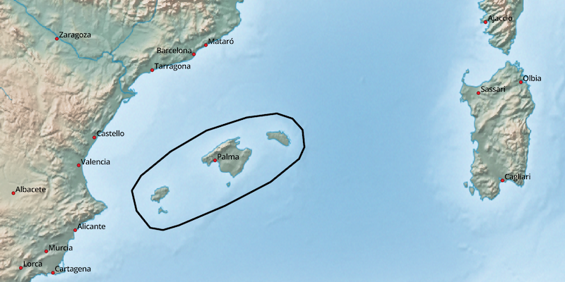
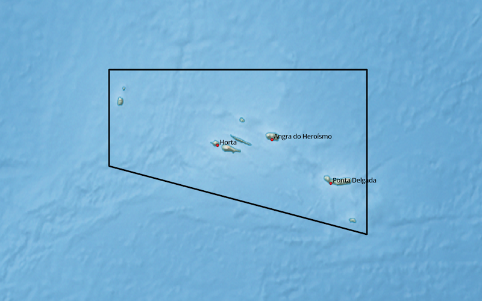
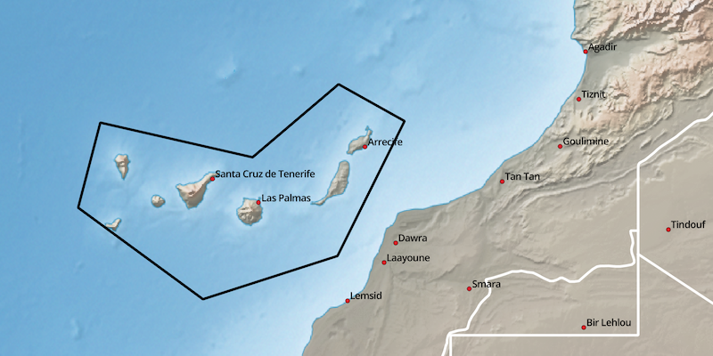
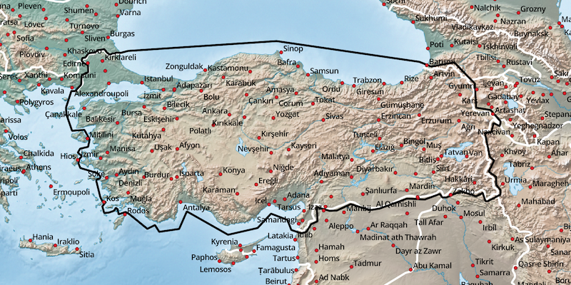

Sonstige Länder - verfügbare Karten:
- Balearen (Balearics)
- Azoren (Azores)
- Madeira (Madeira)
- Kanarische Inseln (ESP, Canarias)
- Republik Türkei (TUR)
Hinweise zum Download:
- gmapsupp: Installationsimage für Micro-SD-Karte (GPS-Gerät)
- installer: Installationsarchiv für Garmin BaseCamp (Windows)
- gmap: GMAP Archiv für Garmin BaseCamp (macOS)
Balearen (Balearics):

| Sprache | GPS-Gerät | Windows | macOS |
|---|---|---|---|
| Englisch | gmapsupp | installer | gmap |
Azoren (Azores):

| Sprache | GPS-Gerät | Windows | macOS |
|---|---|---|---|
| Portugiesisch | gmapsupp | installer | gmap |
| Englisch | gmapsupp | installer | gmap |
Madeira (Madeira):

| Sprache | GPS-Gerät | Windows | macOS |
|---|---|---|---|
| Portugiesisch | gmapsupp | installer | gmap |
| Englisch | gmapsupp | installer | gmap |
Kanarische Inseln (ESP, Canarias):

| Sprache | GPS-Gerät | Windows | macOS |
|---|---|---|---|
| Englisch | gmapsupp | installer | gmap |
Republik Türkei (TUR):

| Sprache | GPS-Gerät | Windows | macOS |
|---|---|---|---|
| Englisch | gmapsupp | installer | gmap |